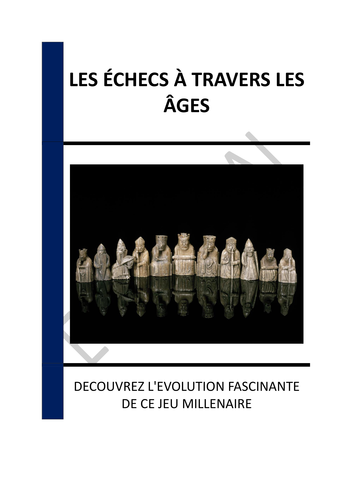

▶
Vitesse
++
+
=
-
--
INTRODUCTION - UN VOYAGE À TRAVERS L'HISTOIRE ET L'ÉVOLUTION DES ÉCHECS
Chapitre 1 - ORIGINES DU CHATURANGA : UN JEU MILITAIRE INDIEN
1.1 - Les racines culturelles du Chaturanga
1.2 - Les règles et mécanismes du Chaturanga
1.3 - L'impact du Chaturanga sur les jeux stratégiques
Chapitre 2 - ÉVOLUTION VERS LE SHATRANJ : ADAPTATIONS ET INNOVATIONS EN PERSE
2.1 - La transition culturelle du Chaturanga au Shatranj
2.2 - Les innovations stratégiques du Shatranj
2.3 - La diffusion du Shatranj dans le monde islamique
Chapitre 3 - INTRODUCTION DES ÉCHECS EN EUROPE : TRANSFORMATIONS AU MOYEN ÂGE
3.1 - L'arrivée des échecs en Europe via l'Espagne
3.2 - Les modifications des règles au Moyen Âge
3.3 - L'impact des échecs sur la société médiévale
Chapitre 4 - LA RENAISSANCE : STANDARDISATION ET COMPÉTITIONS OFFICIELLES
4.1 - L'évolution des règles pendant la Renaissance
4.2 - Les premiers tournois d'échecs
4.3 - L'influence de la Renaissance sur la stratégie échiquéenne
Chapitre 5 - CRÉATION DE LA FIDE
5.1 - Les origines de la FIDE
5.2 - L'impact de la FIDE sur les échecs mondiaux
5.3 - Les controverses et défis de la FIDE
Chapitre 6 - IMPACT DE LA RÉVOLUTION INDUSTRIELLE SUR LA DIFFUSION DES ÉCHECS
6.1 - L'imprimerie et la publication de manuels d'échecs
6.2 - L'émergence des clubs d'échecs
6.3 - La presse spécialisée et les échecs
Chapitre 7 - ÉCHECS MODERNES : L'ÈRE NUMÉRIQUE ET L'ANALYSE ASSISTÉE PAR ORDINATEUR
7.1 - L'avènement des logiciels d'échecs
7.2 - Les bases de données échiquéennes
7.3 - L'IA et les échecs
Chapitre 8 - L'ESSOR DES ÉCHECS EN LIGNE : ACCESSIBILITÉ ET COMMUNAUTÉ MONDIALE
8.1 - Les plateformes en ligne et leur impact
8.2 - Les tournois en ligne et leur popularité
8.3 - Les échecs en ligne comme outil pédagogique
CONCLUSION - LES ÉCHECS : UN HÉRITAGE VIVANT ET UNE FENÊTRE SUR L'AVENIR
📄 Consulter les annexes du livre
Mentions légales